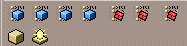
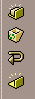
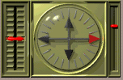
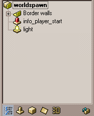
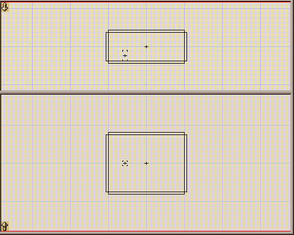
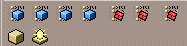
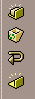
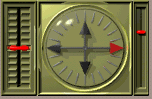
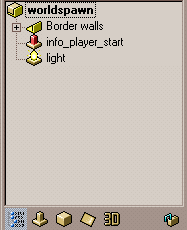
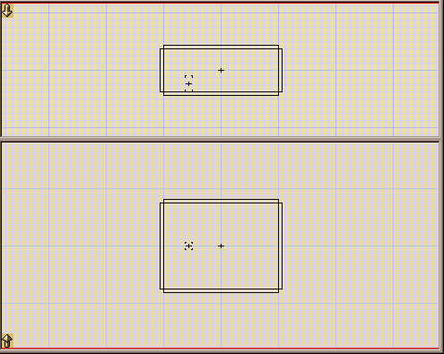

Overview
Updated 25 Jun 2006
- QuArK Information Base
- 1. Introduction to QuArK
- 1.5. Map-editor in QuArK
|
|
Overview
Updated 25 Jun 2006
|
Upper levels: - QuArK Information Base - 1. Introduction to QuArK - 1.5. Map-editor in QuArK |
|
1.5.1. Overview |
[ - - ] |
|
Index |
|
Overview |
Decker - 28 Feb 2001 | [ Top ] |
|
Move your mouse to highlight an area in the map-editor, then mouse-click to go to an description of that area. (Graphic-example from QuArK v5.7)

 









| |||||||||||||||||
|
Hintbox |
Decker - 16 Mar 2003 | [ Top ] |
|
|
Copyright (c) 2009, GNU General Public License by The QuArK (Quake Army Knife) Community - http://quark.sourceforge.net/ |
[ - Top - ] |